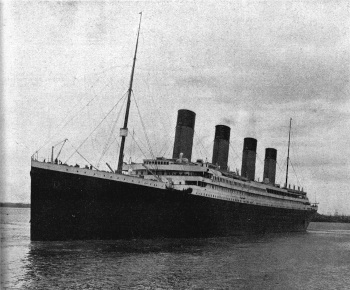

L'RMS Titanic era un transatlantico britannico che affondò il 15 aprile 1912 a seguito dell'impatto con un iceberg durante il suo viaggio inaugurale da Southampton , in Inghilterra, a New York City , negli Stati Uniti. Dei 2.224 passeggeri e dell'equipaggio stimati a bordo, 1.496 morirono, rendendo l'incidente l'affondamento più mortale di una singola nave in quel momento. Il Titanic , operato dalla White Star Line , trasportava alcune delle persone più ricche del mondo, nonché centinaia di emigranti dalle isole britanniche , dalla Scandinavia e da altre parti d'Europa che cercavano una nuova vita negli Stati Uniti e Canada. Il disastro attirò l’attenzione del pubblico, stimolò importanti cambiamenti nelle norme sulla sicurezza marittima e ispirò un’eredità duratura nella cultura popolare .
